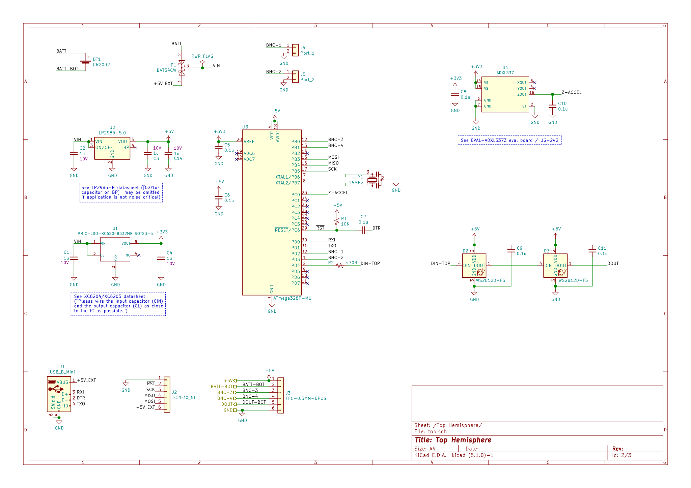
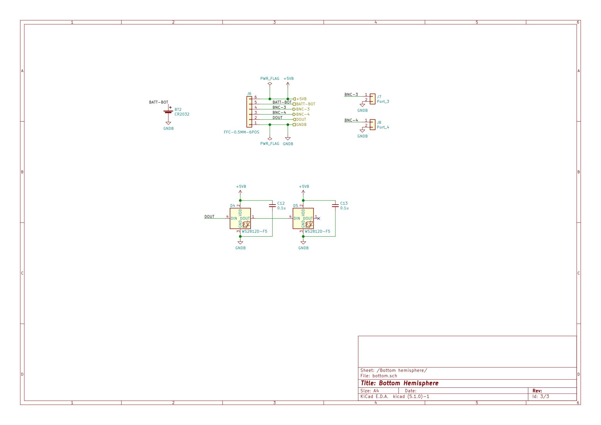
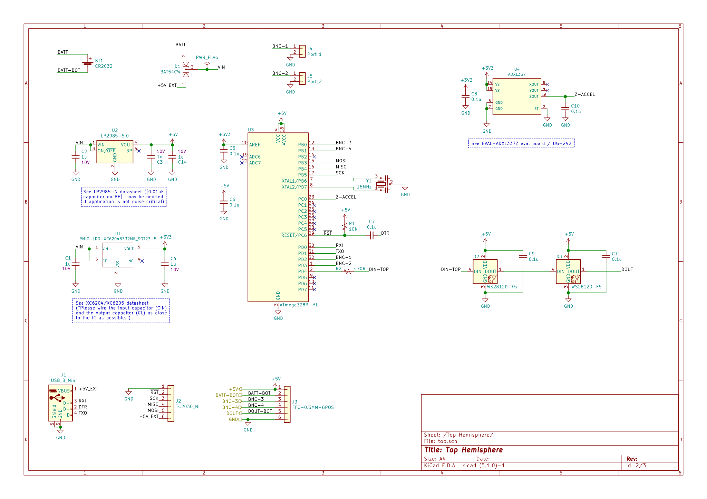
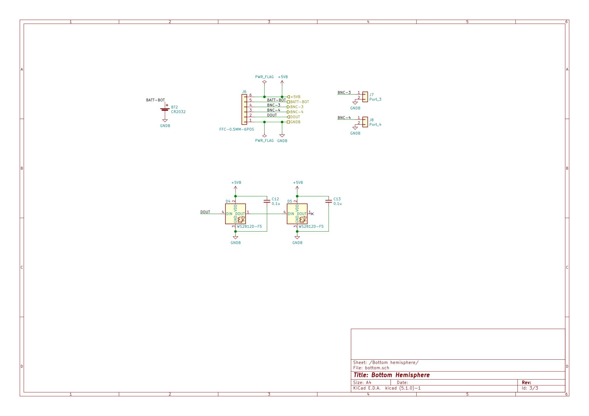

SAN: PCB Design
Table of Contents
1 Objectives
- Find outline for PCBs.
- Check the schematic designed with KiCad.
- Create a manufacturing ready board layout.
- Optimize price and manufacturing time.
2 3D mockup
Via the top left menu, layers can be turned off to reveal the inside of the sphere. Only certain large components are part of the mockup. The 3D mockup has been created with the Iris plugin from the Rhino 3D model file mockup.3dm.
- The diameter of the sphere is 50 mm.
- Only larger components have been included.
- There are two PCBs in order to get the LEDs in the correct positions.
- The top USB connector is abused for interfacing with an FTDI. This is to easily be able to update the firmware.
3 Schematic
 



This is a snapshot of the schematic. The most recent version of the schematic can be found in the KiCad project node in the SAN repo on GitHub.
4 Seeed Studio
As assembly house Seeed Studio has been chosen. Capabilities of the Seeed Fusion One-Stop PCB Assembly Service:
- Fusion overview (Passive Components as small as 01005(0402) package)
- Seeed Studio Fusion PCB Assembly (with section about PCB assembly capabilities)
- Fusion PCB Specification (incl. Gerber requirements and tolerances)
- Fusion PCBA Specification
- Component layout considerations – PCB DFM Part 4
- Fusion Technical FAQ? (with panelization rules and more)
- Upload form (with selectable Trace Width / Spacing and Minimum Drill Hole Size)
4.1 OPL
Seeed keeps components in stock for quick production time. These are listed in the Open Part Library. Notes:
- The OPL is split into two libraries: Selected can be the Seeed OPL or the Shenzhen OPL, which is based on a partnership with the HuaQiang Group.
- For the Seeed OPL there is a corresponding KiCad library available.
- For the project, only components from the OPL will be used. (Let’s hope components in the Seeed OPL are in stock.)
4.2 Inside
The author of this document visited Seeed Studio in Shenzhen as part of Mitch Altman’s 2017 Hacker Trip to China.

5 Ideas
Replace the Mini USB Type B connector with a Tag-Connect interface, sticking out of the shell behind the battery.
Then it may be possible to make both boards the same size.
- Replace NeoPixel THT LEDs with SMD LEDs shining sidewards.
- Use a separate MCU for controlling the LEDs. This takes off load from the main MCU, allowing the LED colors to be changed without taking away too many clock cycles otherwise needed for communication between nodes. Also a separate MCU may have enough ports to drive the LEDs directly.
- Move the Tag-Connect interface for burning the bootloader to the back. This saves space on the front.
6 Source of 3D compontents
- BK-912:
BK-912.STEP - APFA3010LSEEZGKQBKC:
APFA3010.STEP - Molex PicoBlade 0533980271:
533980271.stp - TE AMP Mini CT 292228-2:
c-0292228-02-a-3d.stp - Amphenol 10118193-0001LF:
10118193-0001lfc.stp - Amphenol SFW8R-2STE1LF:
ssfw08r_2_4st_lf.stp - ATMega 328P-AU:
32A.step(Ultra Librarian for Digi-Key) - BNC connector:
31-221-RFX.stp - Hirose FH12-6S-0.5SH(55):
FH12-6S-0.5SH.stp - JST 2mm:
JST_PH_B2B-PH-K_1x02_P2.00mm_Vertical.step - Molex PicoBlade:
530470210.stp - Mini-USB connector:
USB_Mini-B_Lumberg_2486_01_Horizontal.step